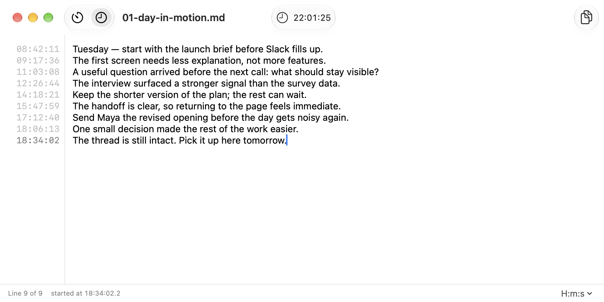
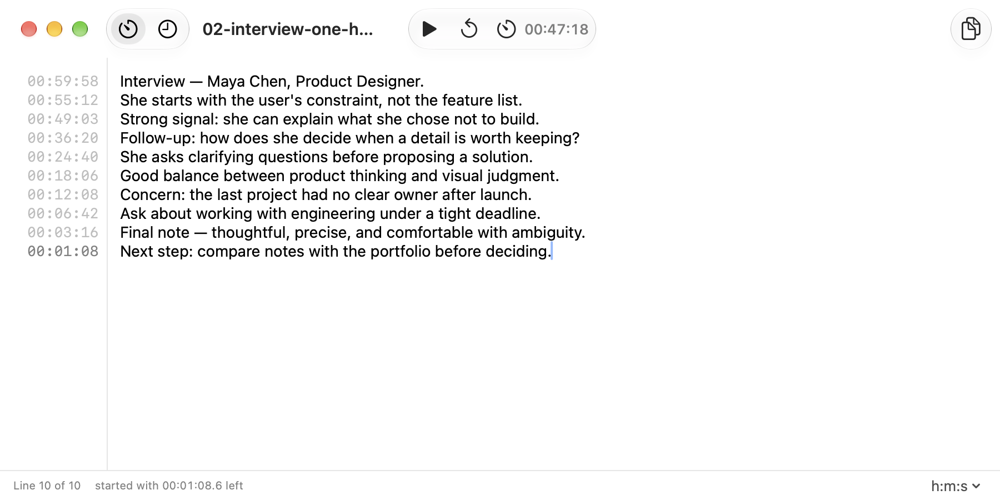
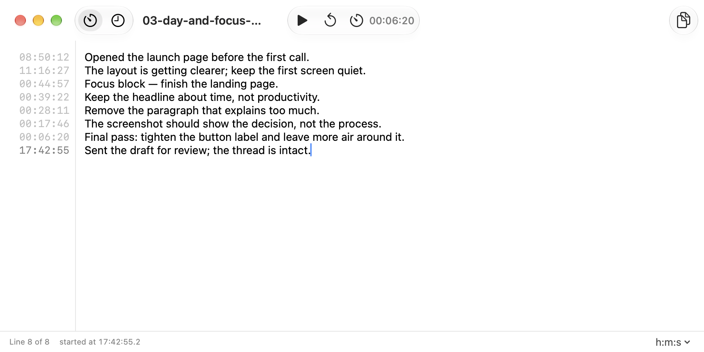

01 / Throughout the day
Keep the day in one thread.
Capture the thought before Slack, a call, or the next task changes the context.
Timestamped notes for Mac
Tickline is a local Mac app for interstitial journaling and timed sessions. Write when work starts, shifts, or ends — every line remembers when.

Three ways to use Tickline
Use the clock when context matters. Use the timer when the slot is fixed. Keep both in the same plain note.
Capture the thought before Slack, a call, or the next task changes the context.

Set a slot, listen, and write. Each line keeps the time left when you made the note.

Start a block, keep typing, and return to the exact state of the work — not a vague feeling.
How it works
Tickline stays close to a blank page, then quietly adds the one thing a normal note forgets: when it happened.
Start with a blank note ↗Drop in a text file, or make a new Markdown note without an account.
Clock mode follows the day. A countdown keeps a meeting or focus block contained.
New lines get their moment automatically. No tags, prompts, or organising before the thought.
A small Mac app for keeping context
For interviews, focused work, interrupted work, and the line you need to write before the next thing begins.